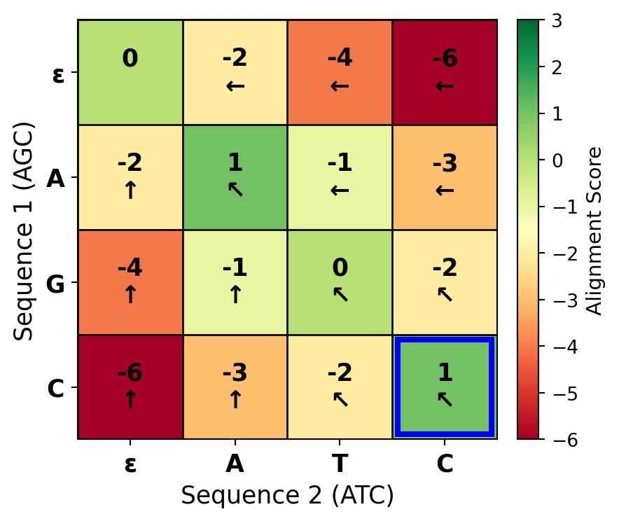

This chapter is about finding the best way to line up two biological sequences to reveal their similarities and differences. Alignment is fundamental to understanding how sequences are related evolutionarily and what functions they might perform.
The alignment problem
Imagine you are looking at two DNA sequences, and you want to figure out if they are related. Maybe they are the same gene from two different species, or maybe they are two different versions of a gene in the same population. How do you compare them? You could just look at them and see if they look similar, but that is not very precise. What you really want is a systematic way to line them up so you can see exactly where they match and where they differ. This is the problem of sequence alignment, and it is one of the most fundamental operations in all of bioinformatics. The question seems simple enough: given two biological sequences, what is the best way to align them from beginning to end to reveal their similarities and differences? But as you will see, this apparently simple question leads to some fascinating computational challenges and beautiful algorithmic solutions. The alignment problem is deceptively tricky because sequences evolve over time through mutations, insertions, and deletions, so two sequences that descended from the same ancestral sequence may now look quite different.
The problem of sequence alignment arises from a fundamental principle of molecular evolution. Biological sequences—whether DNA, RNA, or protein sequences—evolve through time via mutations. These mutations include substitutions, where one nucleotide or amino acid is replaced by another, and insertions and deletions (collectively called indels), where material is added or removed from the sequence. When we observe two sequences today, they may have diverged from a common ancestor millions or even billions of years ago, and the evolutionary processes that have shaped these sequences leave traces in the form of similarities and differences that alignment algorithms seek to uncover. By finding the optimal alignment between sequences, we can infer their evolutionary relationship, identify functionally important regions that have been conserved over evolutionary time, and predict the structure and function of unknown sequences based on their similarity to sequences we already understand. The better we can align sequences, the better we can understand their biology. So getting alignment right really matters.
Global alignment, as distinguished from local alignment, seeks to align entire sequences from their first position to their last. This approach makes sense when comparing sequences that you expect to be similar over their entire length, such as homologous proteins from closely related species or different versions (alleles) of the same gene within a population. When you perform a global alignment, you are making the assumption that the sequences correspond to each other from beginning to end, and your job is to figure out the best way to match them up, inserting gaps where necessary to accommodate insertions and deletions. The requirement to align complete sequences introduces unique computational challenges, as the algorithm must consider all possible ways of introducing gaps to accommodate insertions and deletions while maintaining the overall correspondence between sequences. As you will see, the number of possible alignments grows astronomically with sequence length, so we need clever algorithms to find the best alignment without having to explicitly consider every single possibility.
The development of efficient algorithms for global sequence alignment represents one of the early triumphs of computational biology. The application of dynamic programming to this problem, first introduced by Needleman and Wunsch in 1970, provided an elegant solution that guarantees finding the optimal alignment while completely avoiding the need to enumerate the astronomical number of possible alignments that a brute-force approach would require. This algorithmic innovation not only solved a practical problem—allowing biologists to align sequences that would otherwise be impossible to compare systematically—but also established a computational paradigm that has been applied to numerous other problems in bioinformatics and beyond. The dynamic programming approach to sequence alignment is a beautiful example of how the right algorithm can transform an apparently intractable problem into one that can be solved efficiently. As you work through this chapter, you will see exactly how this transformation works, and hopefully you will develop an appreciation for the elegance of the solution.
Why does all of this matter? Because sequence alignment is not just an abstract computational problem—it is a fundamental tool that underlies much of modern biology and medicine. Global sequence alignment is essential to evolutionary biology, providing quantitative measures of sequence similarity that can be used to infer phylogenetic relationships and understand how species are related. When you align sequences from different species, you can identify conserved regions that have been maintained by natural selection because they are functionally important, and you can identify variable regions that have accumulated neutral or adaptive mutations over evolutionary time. One of the most common applications is functional annotation—inferring the function of a newly sequenced gene or protein based on its similarity to sequences of known function. The logic is straightforward: proteins with similar sequences typically fold into similar three-dimensional structures and perform similar biochemical functions, so if you find that your unknown sequence aligns well with a protein of known function, that is strong evidence that they share that function. In medical genetics, sequence alignment plays a crucial role in identifying disease-causing mutations by aligning a patient’s gene sequence with a reference sequence to identify variations that may be pathogenic. In the era of whole-genome sequencing, alignment algorithms help us compare entire genomes to reveal patterns of conserved gene order, identify corresponding genes in different species, and understand the evolutionary forces that have shaped genome structure. So as you learn about the algorithms and mathematics of sequence alignment in this chapter, keep in mind that these tools have very real applications in understanding the biology of life and in improving human health.
Why alignment is computationally hard
You might think that aligning two sequences would be straightforward. After all, if you just want to line them up and see how similar they are, why not just do it? The problem is that there are so many different ways to align two sequences that trying them all would take longer than the age of the universe—even for sequences that are not particularly long. Let me show you why. If you have two sequences and you are not allowed to insert any gaps, then there is only one way to align them: position one in the first sequence lines up with position one in the second sequence, position two with position two, and so on. Easy. But biological sequences do not work like that. Evolution introduces insertions and deletions, so if you want to find the true evolutionary relationship between two sequences, you need to allow gaps. And once you allow gaps, the number of possible alignments explodes.
Think about it this way. For two sequences of lengths m and n, every possible alignment corresponds to a way of inserting gaps into both sequences such that they end up the same length and then lining them up. How many ways can you do that? It turns out that the number of possible global alignments can be expressed using a formula involving binomial coefficients, and while I could write out the formula for you, what really matters is how fast this number grows. Even for relatively short sequences of 100 nucleotides or amino acids each, the number of possible alignments exceeds 10^60. To put that in perspective, the observable universe contains roughly 10^80 atoms, so we are talking about a number that is not unimaginably far from that scale. This combinatorial explosion means that any algorithm that tries to enumerate and evaluate all possible alignments will fail spectacularly for sequences of any biologically relevant length. If you tried to check all possible alignments of two 100-residue sequences, evaluating one alignment per nanosecond, you would still be working on the problem billions of years after the heat death of the universe. So clearly, we need a smarter approach.
Visualizing the alignment space
Here is a helpful way to think about the alignment problem. Imagine a graph where each path from the starting point to the ending point represents one possible alignment. In this graph, you start at position \((0,0)\), which represents the beginning of both sequences. From there, you can move in three directions. You can move diagonally, which represents aligning one nucleotide or amino acid from each sequence. You can move horizontally, which represents putting a gap in the vertical sequence (so you advance in the horizontal sequence but not the vertical one). Or you can move vertically, which represents putting a gap in the horizontal sequence. Every path through this graph, from the start to the end, corresponds to one valid alignment. The total number of paths through this graph—that is, the number of possible alignments—is astronomical, as we just saw. But notice something important: while the number of paths is enormous, the graph itself has a very regular structure.
This regular structure is the key to solving the problem efficiently. Every node in the graph represents a partial alignment—a state where you have aligned some prefix of the first sequence with some prefix of the second sequence. From each node, you have only three choices for how to extend the alignment: match or mismatch (diagonal move), insert a gap in one sequence (horizontal move), or insert a gap in the other sequence (vertical move). The graph representation reveals that although there are exponentially many paths through the graph, there are only a polynomial number of nodes. Specifically, if the sequences have lengths \(m\) and \(n\), there are only \((m+1) \times (n+1)\) possible nodes in the graph. This observation is crucial. It means that while we cannot afford to enumerate all possible paths (alignments), we can afford to visit all possible nodes (partial alignments). This is the insight that makes dynamic programming work: we can systematically explore the alignment space in a way that guarantees finding the optimal path without explicitly enumerating every single path. The key is to recognize that many different paths pass through the same nodes, and we can exploit this overlap to avoid redundant work.
Figure 37.2: The alignment graph for aligning sequences ‘ATC’ and ‘AGC’. Each path from (0,0) to (3,3) represents a possible alignment. Diagonal moves align characters (match/mismatch), horizontal moves insert a gap in the vertical sequence, and vertical moves insert a gap in the horizontal sequence. Two example paths are shown in different colors.
How fast is fast enough?
Now that we have established that exhaustive search is hopeless, let me tell you the good news. The dynamic programming algorithm for sequence alignment, which we will explore in detail later, has a time complexity of \(O(mn)\) for two sequences of lengths \(m\) and \(n\). What does this mean? It means that the time required to align two sequences grows as the product of their lengths. This is quadratic growth, which is vastly better than the exponential growth of exhaustive search. If you double the length of both sequences, the time required goes up by a factor of four. That is manageable. For protein sequences, which typically have a few hundred amino acids, and for shorter DNA sequences, the \(O(mn)\) complexity is very manageable on modern computers. You can align two sequences of length 1000 in a fraction of a second. The space complexity is also \(O(mn)\), meaning that the amount of memory you need grows quadratically with sequence length as well.
Of course, quadratic complexity is not perfect. For genomic sequences that can contain millions or billions of base pairs, this scaling behavior does start to present challenges. Aligning two sequences of length one million would require a matrix with a trillion cells, which starts to push the limits of memory on typical computers. This is why, when we need to align very long sequences like entire chromosomes or genomes, we often turn to heuristic methods that trade off guaranteed optimality for speed. But for most everyday bioinformatics tasks involving genes and proteins, the \(O(mn)\) complexity of the Needleman-Wunsch algorithm is perfectly acceptable. It is worth noting, however, that when you extend the alignment problem to more than two sequences—that is, multiple sequence alignment—the problem becomes significantly harder. In fact, multiple sequence alignment with arbitrary scoring schemes has been proven to be NP-hard, which means that it is unlikely that we will ever find an algorithm that can solve it efficiently for large numbers of sequences. This theoretical result underscores the fundamental difficulty of alignment and explains why multiple sequence alignment remains an active area of research where people continue to develop better heuristics and approximation algorithms.
Figure 37.3: Comparison of exponential (exhaustive search) versus quadratic (dynamic programming) time complexity for sequence alignment. The number of operations required for exhaustive search grows astronomically with sequence length, while the O(mn) dynamic programming approach remains practical even for moderately long sequences. The shaded region indicates the practical range for typical computers.
Counting all possible alignments
Let me make the magnitude of the alignment problem more concrete by showing you exactly how many possible alignments exist for sequences of different lengths. The number of global alignments between two sequences can be calculated using the concept of lattice paths. Think of it this way: an alignment is a path through a rectangular grid from coordinates \((0,0)\) to \((m,n)\), where \(m\) and \(n\) are the lengths of the two sequences. Each step in the path represents one of three operations: moving right (inserting a gap in the first sequence), moving down (inserting a gap in the second sequence), or moving diagonally (aligning two residues). The total number of such paths is given by what mathematicians call the Delannoy number, which has a formula involving binomial coefficients. But rather than dwell on the formula, let me just show you how these numbers grow. For two sequences of length 10, there are about 8.4 million possible alignments. Not too bad. For sequences of length 20, there are about 14 trillion alignments. Getting worse. For sequences of length 50, there are approximately \(5.7 \times 10^{35}\) alignments. And for sequences of length 100—which is still quite short by biological standards—there are roughly \(9 \times 10^{73}\) possible alignments. That is a number so large that it defies intuition.
The growth of this number is exponential. In fact, for two sequences of equal length \(n\), the number of alignments grows approximately as \(9^n\) (more precisely, like \(3^{2n}\) divided by a slowly growing factor). This exponential growth is what makes exhaustive search impossible. But it gets even worse when you think about what is actually involved in finding the optimal alignment. You cannot just count the alignments—you have to score each one to determine which is best. Scoring an alignment takes time proportional to the alignment length, which is \(O(m+n)\). So if you wanted to exhaustively search all alignments, you would need \(O((m+n) \times D(m,n))\) time, where \(D(m,n)\) is that astronomical Delannoy number. For two sequences of length 100, even if you could evaluate one alignment per nanosecond, you would need more time than has elapsed since the Big Bang to check them all. This is why we absolutely need a better algorithm.
The key insight that saves us is this: while there are exponentially many possible alignments, there are only polynomially many distinct subproblems that we actually need to solve. What do I mean by subproblems? A subproblem is the task of aligning some prefix of the first sequence with some prefix of the second sequence. How many such prefixes are there? Well, the first sequence has \(m+1\) possible prefixes (the empty prefix, the first nucleotide, the first two nucleotides, and so on, up to the entire sequence). Similarly, the second sequence has \(n+1\) possible prefixes. So there are \((m+1) \times (n+1)\) possible subproblems—and that is a polynomial number, not an exponential number. For sequences of length 100, that is about 10,000 subproblems, which is eminently manageable. This observation is the foundation of the dynamic programming approach. Instead of enumerating all possible complete alignments, we will systematically solve all possible subproblems and use those solutions to build up the solution to the full problem. This changes the problem from one that requires exponential time to one that requires only polynomial time.
What makes an alignment optimal?
Before we can talk about finding the optimal alignment, we need to be clear about what we mean by “optimal.” An alignment is considered optimal if it achieves the highest possible score among all valid alignments, where the score is calculated according to some predetermined scoring scheme. The scoring scheme is crucial here. It is how we formalize our biological assumptions about what makes sequences similar. A good scoring scheme rewards alignments that reflect true evolutionary relationships while penalizing alignments that merely reflect random similarity. Think about it this way: we assign a score to each possible alignment, and then we look for the alignment with the best score. But how do we score an alignment? Typically, we give positive scores for matching nucleotides or amino acids (or at least higher scores than mismatches), and we penalize gaps because insertions and deletions are evolutionary events that have some cost. The exact numbers we use for these scores and penalties embody our understanding of molecular evolution. The scoring scheme is our way of telling the algorithm what we think is biologically important.
The optimality criterion reflects our understanding of molecular evolution. Sequences that are more similar are presumed to be more closely related evolutionarily, and the optimal alignment should reveal this relationship by maximizing measured similarity while accounting for the evolutionary events—substitutions, insertions, and deletions—that have occurred since the sequences diverged from their common ancestor. Here is the formal definition. Let \(A\) be the set of all possible alignments between sequences \(S_1\) and \(S_2\). Each alignment \(a\) in \(A\) can be assigned a score based on our scoring function. The optimal alignment \(a^*\) is the one that maximizes this score. We write this mathematically as \(a^* = \underset{a\in A}{\operatorname{argmax}} \text{Score}(a)\) over all alignments \(a\) in \(A\). This definition assumes we are maximizing similarity, which is the usual convention. Alternatively, we could frame the problem as minimizing distance, in which case we would seek the minimum score, but the principle is the same either way.
Now, here is something important to understand: the optimal alignment represents our best hypothesis about how the sequences are related evolutionarily, but it is only optimal with respect to the chosen scoring scheme. Different scoring schemes can produce different optimal alignments for the same pair of sequences. This is not a bug—it is a feature. It reflects the fact that different evolutionary scenarios may be best modeled by different scoring parameters. For example, if you are comparing very closely related sequences, you might want to use harsh penalties for mismatches and gaps because you expect almost everything to match. But if you are comparing distantly related sequences, you might want to use more permissive scoring because you expect many differences to have accumulated over evolutionary time. The choice of scoring scheme should reflect your biological assumptions about the sequences you are aligning. This is why sequence alignment is not just a computational problem—it requires biological judgment as well.
One more thing to keep in mind: the optimal alignment may not be unique. Multiple different alignments may achieve the same optimal score, particularly for sequences with repetitive regions or regions of low complexity. This non-uniqueness can actually be biologically meaningful—it may reflect genuine uncertainty about the evolutionary relationship between sequences. When multiple optimal alignments exist, most algorithms will just report one of them (typically the first one encountered during the search), but it is worth remembering that other equally good alignments might exist. Some sophisticated implementations can enumerate all optimal alignments or sample from the set of near-optimal alignments, which can be useful for assessing confidence in the alignment. The existence of multiple optimal alignments also raises important questions about how much we should trust specific features of any single reported alignment, especially in regions where the sequences are difficult to align.
Scoring matrices and gap penalties
Now that we have established what an optimal alignment is—the one with the best score—we need to talk about how we actually compute the score of an alignment. This is where scoring matrices and gap penalties come in. A scoring matrix is a table that tells you the score for aligning each possible pair of residues. For protein sequences, this is a 20 by 20 matrix because there are 20 amino acids. For DNA sequences, it is a 4 by 4 matrix for the four nucleotides. The scoring matrix embodies our assumptions about which substitutions are more or less likely during evolution. For DNA, we might use a simple scheme like +1 for a match and -1 for a mismatch, though more sophisticated schemes account for the fact that transitions (A to G or C to T) are more common than transversions (A to C, A to T, G to C, or G to T). For proteins, the scoring schemes are more complex because amino acids have different chemical properties, and some substitutions are much more likely than others. A substitution between two chemically similar amino acids—like leucine and isoleucine, which are both hydrophobic—is much more likely to be tolerated than a substitution between chemically very different amino acids—like aspartate (acidic) and lysine (basic).
The most commonly used scoring matrices for protein alignment are the PAM (Point Accepted Mutation) and BLOSUM (BLOcks SUbstitution Matrix) families. These matrices were derived from empirical observations of substitution patterns in aligned sequences known to be homologous. The idea is simple: look at a large collection of aligned protein sequences, count how often each type of substitution occurs, and use those counts to estimate the probability that two residues are aligned because of homology versus by random chance. The elements of a substitution matrix S are typically log-odds scores. Specifically, S(a,b) is the logarithm of the ratio of two probabilities: the probability of observing residues a and b aligned in homologous sequences divided by the probability of observing them aligned by chance. If this ratio is greater than one, the log is positive, meaning that observing this pair is evidence for homology. If the ratio is less than one, the log is negative, meaning that this pair is more likely to occur by chance than by homology. This log-odds formulation has nice mathematical properties and allows us to add up scores across an alignment to get a total alignment score.
The choice of scoring matrix has a big effect on the resulting alignment. Different scoring matrices are appropriate for sequences at different evolutionary distances. Matrices derived from closely related sequences, like BLOSUM80, have high scores for identities and harsh penalties for mismatches, making them suitable for detecting recent homologs where you expect high sequence identity. Matrices derived from more divergent sequences, like BLOSUM45, are more permissive of substitutions and are better suited for detecting remote homologs where many substitutions have accumulated over evolutionary time. The number in the matrix name gives you a hint about the evolutionary distance it is designed for: BLOSUM62 is a general-purpose matrix suitable for moderate evolutionary distances, while BLOSUM80 is for closely related sequences and BLOSUM45 for distantly related ones. Choosing the right matrix for your specific biological question is important and requires some knowledge of how diverged you expect your sequences to be. In practice, BLOSUM62 is a safe default choice for many applications, but you should be aware that this choice affects your results.
Figure 37.4: Partial BLOSUM62 substitution matrix showing scores for a subset of amino acids. Positive scores (green) indicate that observing this pair is evidence for homology, while negative scores (red) suggest the pair is more likely due to chance. The diagonal elements (self-matches) have the highest scores. Notice that chemically similar amino acids (like I and L, both hydrophobic) have positive off-diagonal scores.
Gap penalties
Beyond the scoring matrix, which tells us how to score aligned pairs of residues, we also need to decide how to penalize gaps. A gap represents an insertion or deletion event in the evolutionary history of the sequences, and we need some way to account for the cost of introducing gaps into the alignment. The simplest approach is called linear gap costs. Under this model, the cost of a gap is directly proportional to its length. If you have a gap of length k and your gap penalty is d, then the cost of that gap is k times d. So a gap of length 3 costs three times as much as a gap of length 1. The total score of an alignment under linear gap costs is the sum of all the substitution scores from the scoring matrix minus the gap penalty times the total number of gap positions. Mathematically, that is: Score equals the sum over all aligned pairs of S(a_i, b_j) minus d times the number of gaps, where S(a_i, b_j) is the substitution score for aligning residues a_i and b_j from the scoring matrix, and d is the gap penalty.
Now, the linear gap model has a significant biological limitation that you should be aware of. It assumes that each gap position corresponds to an independent insertion or deletion event. So a gap of length 3 is treated as if three separate single-nucleotide indels occurred. But in reality, that is often not how evolution works. Insertions and deletions often occur in larger chunks—a single mutational event might insert or delete multiple residues at once. This means that the evolutionary cost of opening a gap (creating a new gap where there was not one before) is typically higher than the cost of extending an existing gap (making an existing gap one residue longer). The linear gap model does not capture this distinction. It penalizes each gap position equally, whether it is opening a new gap or extending an existing one. Despite this limitation, linear gap costs are still useful. They are mathematically simple, which makes them a good starting point for understanding how alignment algorithms work. They also lead to elegant and efficient dynamic programming algorithms, as you will see shortly.
Gap Penalty Models Comparison
============================================================
LINEAR GAP PENALTY (d = 2):
------------------------------------------------------------
Alignment 1 (three separate single-base gaps):
Seq1: ATGC---GAT
Seq2: ATGCGGGGA-
Cost: 3 × d = 3 × 2 = 6
Alignment 2 (one three-base gap):
Seq1: ATGC---GAT
Seq2: ATGCGGGGA-
Cost: 3 × d = 3 × 2 = 6
→ Both alignments have the same cost!
AFFINE GAP PENALTY (d_open = 5, d_extend = 1):
------------------------------------------------------------
Alignment 1 (three separate gaps):
Seq1: A-TGC-GA-T
Seq2: ATGGCGGGAT
Cost: 3 × (d_open + 0 × d_extend) = 3 × 5 = 15
Alignment 2 (one three-base gap):
Seq1: ATGC---GAT
Seq2: ATGCGGGGA-
Cost: d_open + 2 × d_extend = 5 + 2 = 7
→ Alignment 2 (fewer, longer gaps) is preferred!
→ This better reflects how evolution actually works
Figure 37.5
In the dynamic programming framework, linear gap costs lead to a particularly simple recurrence relation. When we are trying to compute the score for aligning prefixes of length \(i\) and \(j\), we have exactly three possibilities to consider. First, we could align position \(i\) from the first sequence with position \(j\) from the second sequence—this corresponds to a diagonal move in our alignment graph. Second, we could align position \(i\) from the first sequence with a gap—this corresponds to a horizontal move. Third, we could align a gap with position \(j\) from the second sequence—this corresponds to a vertical move. Each of these three possibilities can be evaluated in constant time using our scoring matrix and gap penalty, and we just take the maximum of the three. This gives us our \(O(mn)\) time complexity: we have \(O(mn)\) cells to fill in our dynamic programming matrix, and each cell requires constant time to compute, so the total time is \(O(mn)\). Nice and simple.
The principle of optimality
Now we come to the key insight that makes dynamic programming work for sequence alignment. It is called the principle of optimality, and it states that an optimal solution to a problem contains optimal solutions to its subproblems. Let me make this concrete. Suppose you have found the optimal alignment of two sequences \(S_1\) and \(S_2\). This alignment is the best possible—it has the highest score among all possible alignments. Now, pick any portion of this alignment. Maybe you look at the portion from position \(i\) to position \(j\) in the first sequence and from position \(k\) to position \(l\) in the second sequence. The principle of optimality says that this portion must itself be an optimal alignment of the corresponding subsequences \(S_1[i..j]\) and \(S_2[k..l]\). Think about why this must be true. If that portion were not optimal, that would mean there exists some better way to align those particular subsequences. But then you could take your overall alignment, cut out the suboptimal portion, plug in the better alignment of those subsequences, and you would have an alignment with a better total score than your supposedly optimal alignment. That is a contradiction. So every portion of an optimal alignment must itself be an optimal alignment of the corresponding subsequences.
This might seem like an abstract property, but it has profound implications for algorithm design. Let me show you why. The principle of optimality tells us that we can build up an optimal alignment by combining optimal alignments of smaller pieces. This is the essence of dynamic programming: solve small problems first, store their solutions, and then use those solutions to solve bigger problems. For sequence alignment, here is how it works. Instead of trying to find the optimal alignment of the full sequences all at once, we systematically compute optimal alignments of all possible pairs of prefixes. What is a prefix? It is just the first \(k\) characters of a sequence for some \(k\). Every sequence of length \(m\) has \(m+1\) prefixes: the empty sequence, the first character, the first two characters, and so on up to the entire sequence. So if we have two sequences of lengths \(m\) and \(n\), there are \((m+1) \times (n+1)\) possible pairs of prefixes. For each pair of prefixes, we compute the optimal alignment score and store it. Then, when we need to compute the optimal alignment of longer prefixes, we can use the stored results for shorter prefixes. This transforms the problem from one requiring exponential time to one requiring only polynomial time.
Let me prove this principle of optimality to you so you can see why it is true. We will use proof by contradiction. Suppose we have an optimal alignment \(A^*\) of sequences \(S_1\) and \(S_2\), and suppose we look at some portion of this alignment covering positions \(i_1\) to \(i_2\) in the first sequence and \(j_1\) to \(j_2\) in the second sequence. Now, assume for the sake of contradiction that this portion is not optimal. That means there exists some other alignment \(B\) of these subsequences that has a better score than the corresponding portion of \(A^*\). Okay, so what can we do? We can construct a new alignment \(A'\) by taking \(A^*\) and replacing the portion from \(i_1\) to \(i_2\) and \(j_1\) to \(j_2\) with \(B\) while leaving everything else unchanged. What is the score of this new alignment \(A'\)? Well, it is the score of \(A^*\) minus the score of the portion we removed plus the score of \(B\). Since \(B\) has a higher score than the portion we removed, \(A'\) has a higher score than \(A^*\). But wait—we said \(A^*\) was optimal, meaning it had the highest possible score. So we have a contradiction. Therefore, our assumption must have been wrong, and every portion of an optimal alignment must itself be optimal. This principle is what makes dynamic programming possible for sequence alignment.
The recurrence relation
The principle of optimality leads directly to a recursive formulation of the alignment problem. Let \(F(i,j)\) denote the score of the optimal alignment of the first \(i\) characters of sequence \(S_1\) with the first \(j\) characters of sequence \(S_2\). In other words, \(F(i,j)\) is the optimal score for aligning the prefix \(S_1[1..i]\) with the prefix \(S_2[1..j]\). Now think about how we could compute \(F(i,j)\). If we have an optimal alignment of these two prefixes, what are the possible ways it could end? There are exactly three possibilities. First, the alignment could end with position \(i\) from \(S_1\) aligned to position \(j\) from \(S_2\)—we call this a match if the two residues are the same or a mismatch if they are different. Second, the alignment could end with position \(i\) from \(S_1\) aligned to a gap—this corresponds to a deletion from \(S_1\) or equivalently an insertion into \(S_2\). Third, the alignment could end with a gap aligned to position \(j\) from \(S_2\)—this corresponds to an insertion into \(S_1\) or equivalently a deletion from \(S_2\). These are the only three possibilities, and by the principle of optimality, the best alignment must come from taking the best of these three options.
This gives us our fundamental recurrence relation:
Here, \(S(S_1[i], S_2[j])\) is the score from our substitution matrix for aligning the residue at position \(i\) in sequence one with the residue at position \(j\) in sequence two, and \(d\) is our gap penalty. We take the maximum of these three values, and that is our optimal score for aligning the first \(i\) positions of \(S_1\) with the first \(j\) positions of \(S_2\). This recurrence relation is the heart of the Needleman-Wunsch algorithm, and understanding it is crucial to understanding how dynamic programming solves the alignment problem.
flowchart TD A["F(i-1,j-1)<br/>diagonal<br/>+S(S₁[i],S₂[j])"] -->|match/mismatch| D["MAX"] B["F(i-1,j)<br/>above<br/>-d"] -->|deletion| D C["F(i,j-1)<br/>left<br/>-d"] -->|insertion| D D --> E["F(i,j)"] style A fill:#e1f5ff,stroke:#0066cc,stroke-width:2px style B fill:#ffe1e1,stroke:#cc0000,stroke-width:2px style C fill:#e1ffe1,stroke:#00cc00,stroke-width:2px style D fill:#fff4e1,stroke:#ff9900,stroke-width:3px style E fill:#f0e1ff,stroke:#9900cc,stroke-width:3px,font-weight:bold
flowchart TD
A["F(i-1,j-1)<br/>diagonal<br/>+S(S₁[i],S₂[j])"] -->|match/mismatch| D["MAX"]
B["F(i-1,j)<br/>above<br/>-d"] -->|deletion| D
C["F(i,j-1)<br/>left<br/>-d"] -->|insertion| D
D --> E["F(i,j)"]
style A fill:#e1f5ff,stroke:#0066cc,stroke-width:2px
style B fill:#ffe1e1,stroke:#cc0000,stroke-width:2px
style C fill:#e1ffe1,stroke:#00cc00,stroke-width:2px
style D fill:#fff4e1,stroke:#ff9900,stroke-width:3px
style E fill:#f0e1ff,stroke:#9900cc,stroke-width:3px,font-weight:bold
Figure 37.6: Computing F(i,j) requires only three previously computed values: F(i-1,j-1) from the diagonal, F(i-1,j) from above, and F(i,j-1) from the left. This local dependency structure is what makes dynamic programming efficient—each cell depends only on its immediate neighbors, not on the entire matrix.
Of course, every recurrence relation needs base cases—initial values that we can compute directly without using the recurrence. For sequence alignment, the base cases are straightforward:
\[
F(0,0) = 0
\]
\[
F(i,0) = -i \times d \quad \text{for } i > 0
\]
The first base case says that aligning two empty sequences has a score of zero—there is nothing to align, so nothing to score. The other base cases say that aligning a sequence of length \(k\) with an empty sequence requires introducing \(k\) gaps, each with penalty \(d\). These base cases give us the initial values along the top edge and left edge of our dynamic programming matrix, and from there we can use the recurrence relation to fill in the rest of the matrix row by row or column by column.

Figure 37.7: A complete dynamic programming matrix for aligning ‘AGC’ with ‘ATC’ using match=+1, mismatch=-1, gap=-2. The matrix is filled row by row using the recurrence relation. Each cell shows the optimal score for aligning the corresponding prefixes. Arrows indicate which predecessor contributed the maximum score: ↖ = diagonal (match/mismatch), ↑ = up (deletion), ← = left (insertion).
Now, here is an important point about the recursive structure. You might be tempted to implement this recurrence directly as a recursive function. But if you did that without memoization, you would get exponential time complexity. Why? Because the same subproblems would be computed over and over again. For example, \(F(i-1,j-1)\) could be reached through multiple different paths in the recursion tree. You might compute it once when computing \(F(i,j)\), and then compute it again when computing \(F(i,j-1)\), and yet again when computing \(F(i-1,j)\). All these redundant computations would add up to exponential time. This is why we use dynamic programming instead of naive recursion. Dynamic programming solves each subproblem exactly once and stores the result in a table, so we never have to recompute the same subproblem. This is what reduces the time complexity from exponential to polynomial.
One final note about the recurrence relation: while it allows us to compute the score of the optimal alignment, recovering the alignment itself—the actual sequence of matches, mismatches, and gaps—requires some additional bookkeeping. As we compute \(F(i,j)\) for each cell, we need to remember which of the three options (match/mismatch, deletion, or insertion) gave us the maximum score. We can store this information in a separate traceback matrix, where each cell records which predecessor cell we came from. Then, after we have filled in the entire scoring matrix and know that \(F(m,n)\) is the optimal score, we can recover the actual alignment by following the traceback pointers backwards from position \((m,n)\) to position \((0,0)\). Each step of the traceback tells us one operation in the alignment: diagonal move means match or mismatch, vertical move means gap in the horizontal sequence, horizontal move means gap in the vertical sequence. By following these traceback pointers, we reconstruct the optimal alignment.
Figure 37.8: Traceback visualization showing the optimal path (in bold red) through the DP matrix from (3,3) back to (0,0). Following this path backwards reconstructs the alignment: A-GC vs ATC-, with score -1. The path interpretation: 1. Start at (3,3), 2. ↖ diagonal: C ↔︎ C (match), 3. ↖ diagonal: G ↔︎ T (mismatch), 4. ↑ up: A ↔︎ - (gap in seq2), 5. ↖ diagonal: A ↔︎ A (match)
The Needleman-Wunsch algorithm
Now we are ready to see how all of these pieces fit together into the Needleman-Wunsch algorithm. Published in 1970 by Saul Needleman and Christian Wunsch, this was the first application of dynamic programming to biological sequence alignment, and it remains one of the foundational algorithms in bioinformatics. The algorithm systematically fills a two-dimensional table where entry \((i,j)\) contains the score of the optimal alignment of the first \(i\) characters of \(S_1\) with the first \(j\) characters of \(S_2\). Once the table is filled, we can read off the optimal score from the bottom-right corner, and we can recover the actual alignment by tracing back through the table. The algorithm has two phases: the forward phase, where we fill in the scoring matrix, and the traceback phase, where we reconstruct the optimal alignment. Let me walk you through both phases step by step.
Phase 1: Fill the scoring matrix
# Initialize base cases
F[0,0] = 0
for i = 1 to m:
F[i,0] = -i × d
Traceback[i,0] = UP
for j = 1 to n:
F[0,j] = -j × d
Traceback[0,j] = LEFT
# Fill the matrix
for i = 1 to m:
for j = 1 to n:
match = F[i-1,j-1] + S[S₁[i], S₂[j]]
delete = F[i-1,j] - d
insert = F[i,j-1] - d
F[i,j] = max(match, delete, insert)
if F[i,j] == match:
Traceback[i,j] = DIAGONAL
else if F[i,j] == delete:
Traceback[i,j] = UP
else:
Traceback[i,j] = LEFT
In the forward phase, we start by initializing the base cases. We set \(F(0,0)\) equal to zero because aligning two empty sequences has a score of zero. Then, for \(i\) from 1 to \(m\), we set \(F(i,0)\) equal to \(-i \times d\), representing the cost of aligning a prefix of \(S_1\) with the empty sequence. Similarly, for \(j\) from 1 to \(n\), we set \(F(0,j)\) equal to \(-j \times d\). These initializations fill in the top row and leftmost column of our matrix. Now comes the main computation. We have two nested loops: the outer loop over \(i\) from 1 to \(m\), and the inner loop over \(j\) from 1 to \(n\). For each cell \((i,j)\), we compute three quantities. First, match equals \(F(i-1,j-1) + S(S_1[i], S_2[j])\)—this is the score if we align position \(i\) with position \(j\). Second, delete equals \(F(i-1,j) - d\)—this is the score if we align position \(i\) with a gap. Third, insert equals \(F(i,j-1) - d\)—this is the score if we align a gap with position \(j\). We set \(F(i,j)\) equal to the maximum of these three values. Crucially, we also record which of the three operations gave us the maximum, because we will need this information during traceback. This recording can be done with a separate traceback matrix that stores a pointer or code indicating whether we came from the diagonal, from above, or from the left.
Figure 37.9: Progressive stages of the Needleman-Wunsch algorithm. (a) Empty matrix, (b) Base cases initialized, (c) After first row computed, (d) Complete matrix with all cells filled. The matrix is filled systematically row by row, with each cell depending only on previously computed neighbors.
Phase 2: Traceback to recover the alignment
# Start at bottom-right cell
i = m
j = n
alignment₁ = ""
alignment₂ = ""
# Follow traceback pointers
while i > 0 or j > 0:
if Traceback[i,j] == DIAGONAL:
alignment₁ = S₁[i] + alignment₁
alignment₂ = S₂[j] + alignment₂
i = i - 1
j = j - 1
else if Traceback[i,j] == UP:
alignment₁ = S₁[i] + alignment₁
alignment₂ = "-" + alignment₂
i = i - 1
else: # LEFT
alignment₁ = "-" + alignment₁
alignment₂ = S₂[j] + alignment₂
j = j - 1
return (alignment₁, alignment₂, F[m,n])
After the forward phase completes, \(F(m,n)\) contains the score of the optimal alignment of the full sequences. But we usually also want to know what the actual alignment is, not just its score. This is where the traceback phase comes in. We start at cell \((m,n)\) and work our way back to cell \((0,0)\), following the traceback pointers we recorded during the forward phase. At each step, we look at the traceback pointer for the current cell. If it points diagonally (to cell \((i-1,j-1)\)), that means we aligned \(S_1[i]\) with \(S_2[j]\), so we add this pair to our alignment. If it points upward (to cell \((i-1,j)\)), that means we aligned \(S_1[i]\) with a gap, so we add a gap character in the second sequence. If it points leftward (to cell \((i,j-1)\)), that means we aligned a gap with \(S_2[j]\), so we add a gap character in the first sequence. We continue following these pointers until we reach \((0,0)\), at which point we have reconstructed the entire alignment. Note that we build the alignment from right to left (prepending characters), so it comes out in the correct order. The beauty of this algorithm is that it guarantees finding the optimal alignment in \(O(mn)\) time by cleverly avoiding all the redundant computation that a naive recursive approach would entail.
Understanding memoization and the dynamic programming matrix
The magic of dynamic programming lies in a technique called memoization, which just means storing the results of computations so you do not have to repeat them. For sequence alignment, each subproblem corresponds to aligning a prefix of one sequence with a prefix of the other sequence. The key insight is simple but powerful: once we have computed the optimal score for aligning the first \(i\) characters of \(S_1\) with the first \(j\) characters of \(S_2\), we store that score in a table, and whenever we need it again, we just look it up instead of recomputing it. The storage mechanism is a two-dimensional array \(F\), where \(F[i,j]\) stores the score of the optimal alignment of \(S_1[1..i]\) with \(S_2[1..j]\). This array is our memoization table, and it is what transforms an exponential-time recursive algorithm into a polynomial-time iterative one. Without memoization, we would recompute the same subproblems over and over again, leading to exponential time complexity. With memoization, we compute each subproblem exactly once and then reuse the stored result whenever we need it.
The dynamic programming approach builds solutions to larger problems from solutions to smaller problems in a systematic way. The key is to compute things in an order that ensures all the values we need are already available when we need them. For sequence alignment, this usually means filling the matrix row by row from top to bottom or column by column from left to right, though any order that respects the dependencies between cells will work. What are these dependencies? For each cell \(F[i,j]\), we need three previously computed values: \(F[i-1,j-1]\) (the diagonal predecessor), \(F[i-1,j]\) (the predecessor directly above), and \(F[i,j-1]\) (the predecessor directly to the left). As long as we fill cells in an order that ensures these three predecessors are already computed when we need them, we are fine. This local dependency structure is what makes the algorithm efficient. Each cell only depends on three immediate neighbors, not on the entire matrix, so we can compute cells incrementally without having to store or process unnecessary information.
The completed dynamic programming matrix is more than just a tool for computing the optimal score—it contains rich information about the relationship between the sequences. The bottom-right cell \(F[m,n]\) gives us the optimal alignment score, but every other cell also tells us something interesting. \(F[i,j]\) gives the optimal score for aligning the first \(i\) characters of \(S_1\) with the first \(j\) characters of \(S_2\), so the entire matrix gives us optimal scores for all possible pairs of prefixes. This can be useful if, for example, you want to find the best alignment of a short prefix of one sequence with the full other sequence. The pattern of values in the matrix also reveals regions of high and low similarity between the sequences. High scores in a region indicate strong similarity, while low scores indicate dissimilarity. You can even use the matrix to identify alternative alignments that score nearly as well as the optimal one by tracing near-optimal paths through the matrix. This can be valuable for assessing how confident we should be in specific features of the reported alignment.
Variations and Extensions
Affine Gap Penalties
While linear gap costs provide a simple model, affine gap penalties offer a more biologically realistic representation of insertion and deletion events. Under the affine gap model, the cost of a gap of length \(k\) is:
where \(d_{\text{open}}\) is the gap opening penalty and \(d_{\text{extend}}\) is the gap extension penalty, with typically \(d_{\text{open}} \gg d_{\text{extend}}\).
Implementing affine gap penalties requires a modified dynamic programming approach with three matrices instead of one: - \(M[i,j]\): Best score ending with \(S_1[i]\) aligned to \(S_2[j]\) - \(I_x[i,j]\): Best score ending with \(S_1[i]\) aligned to a gap - \(I_y[i,j]\): Best score ending with a gap aligned to \(S_2[j]\)
The recurrence relations become more complex but maintain the same \(O(mn)\) time complexity.
Local Alignment
While global alignment aligns entire sequences, local alignment (Smith-Waterman algorithm) finds the best-matching subsequences within two sequences. This is achieved through two key modifications:
Allow the alignment to start at any position by initializing all edges to 0
Allow the alignment to end at any position by taking the maximum over the entire matrix
The recurrence relation becomes:
\[
F(i,j) = \max \begin{cases}
0 & \text{(start new alignment)} \\
F(i-1,j-1) + S(S_1[i], S_2[j]) \\
F(i-1,j) - d \\
F(i,j-1) - d
\end{cases}
\]
Conclusion
Pairwise global sequence alignment represents a fundamental operation in computational biology, providing the foundation for understanding evolutionary relationships, predicting function, and identifying important biological features. The application of dynamic programming to this problem, first demonstrated by Needleman and Wunsch, transformed an exponentially complex problem into one solvable in polynomial time, enabling the analysis of biological sequences at scale.
The elegance of the dynamic programming solution lies in its exploitation of the principle of optimality—the recognition that optimal alignments contain optimal sub-alignments. This principle allows us to build up the solution systematically, storing and reusing the scores of sub-alignments to avoid redundant computation. The resulting algorithm, with its \(O(mn)\) time complexity, makes it feasible to align sequences of biologically relevant length, from individual genes to entire chromosomes.
The scoring framework for alignment, encompassing substitution matrices and gap penalties, provides a flexible system for modeling different evolutionary scenarios. While simple scoring schemes like linear gap costs have limitations, they serve as important baselines and teaching tools. More sophisticated models, such as affine gap penalties and position-specific scoring, better capture biological reality but require more complex algorithms.
The impact of pairwise global alignment extends far beyond its original application. The algorithmic framework has inspired solutions to numerous other problems in bioinformatics, from RNA structure prediction to gene finding. The conceptual framework—representing biological problems as optimization problems solvable by dynamic programming—has become a cornerstone of computational biology.
Looking forward, sequence alignment continues to evolve in response to new challenges and opportunities. The massive scale of modern sequence databases requires continued algorithmic innovation. The integration of machine learning approaches promises to capture complex patterns in sequence evolution that traditional methods might miss. The increasing availability of structural information provides new constraints that can improve alignment accuracy.
As we enter an era where sequencing entire genomes is routine and comparing thousands of genomes is feasible, the principles established by the study of pairwise global alignment remain relevant. The fundamental challenge—finding meaningful similarities between sequences despite the noise introduced by billions of years of evolution—continues to drive innovation in computational biology. The solutions to this challenge, built on the foundation of dynamic programming and optimal alignment, will continue to provide insights into the molecular basis of life for years to come.
The story of pairwise global sequence alignment is thus not just a tale of algorithmic elegance but a testament to the power of computational thinking in biology. By formulating biological questions in precise mathematical terms and developing efficient algorithms to answer them, we gain not just practical tools but deeper understanding of the principles governing molecular evolution. As sequencing technologies continue to advance and our databases continue to grow, the methods and insights derived from the study of sequence alignment will remain central to our efforts to decode the information written in the language of DNA and proteins.